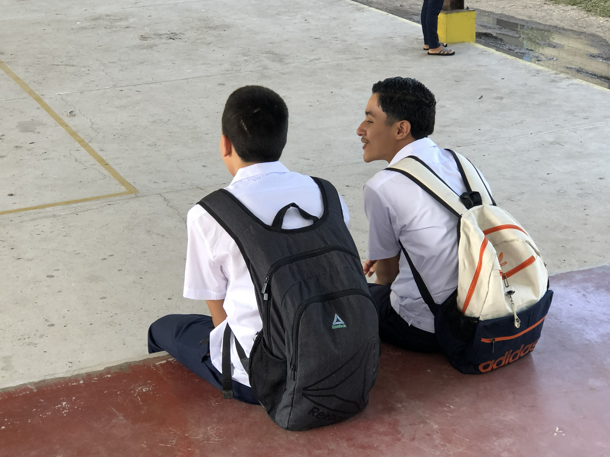
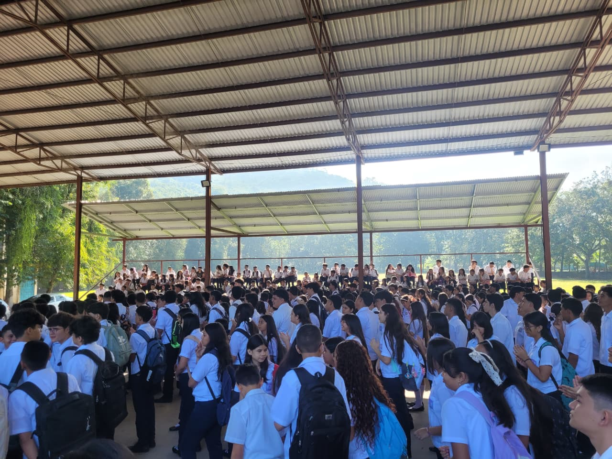
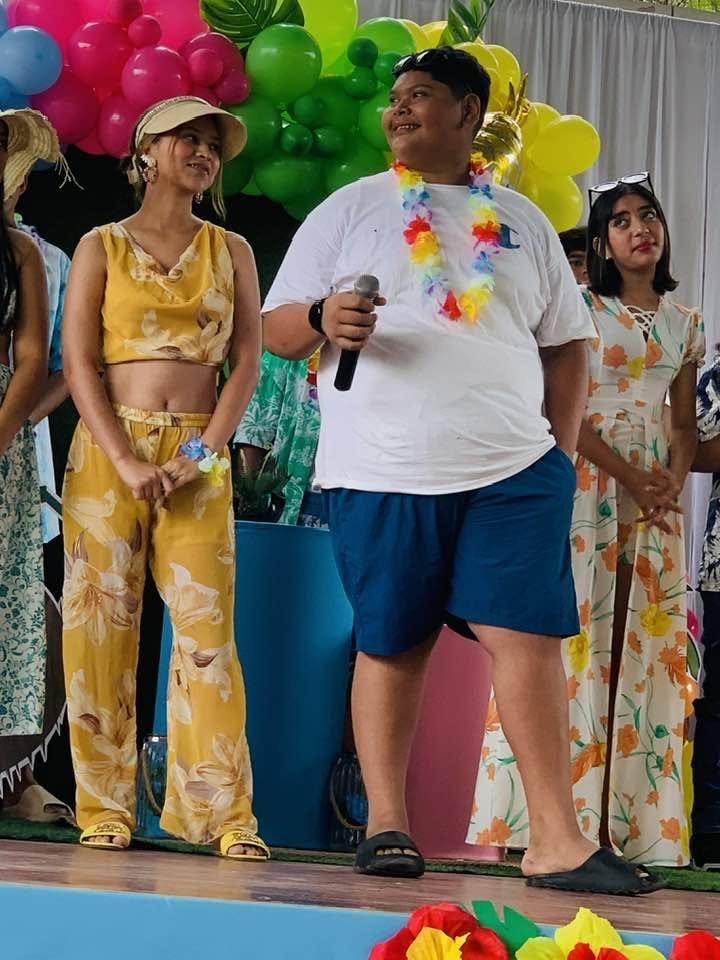
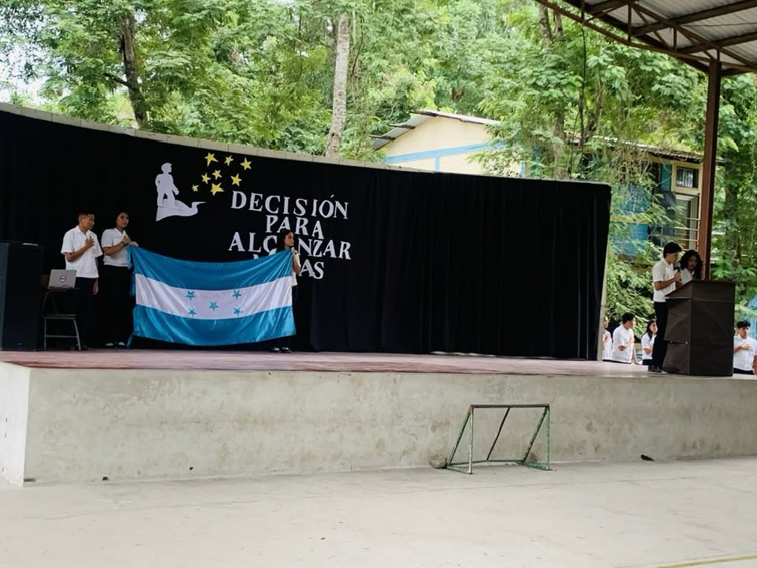
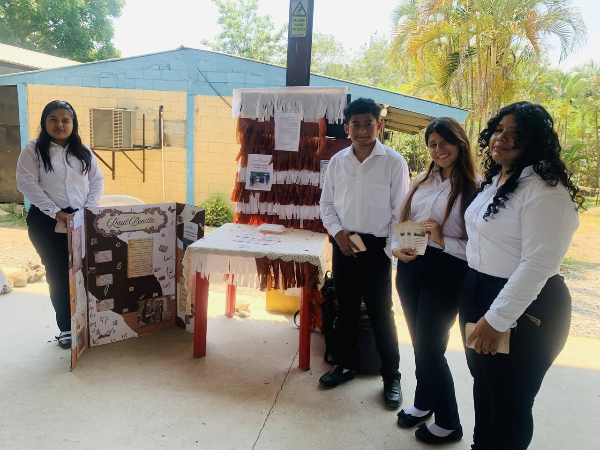
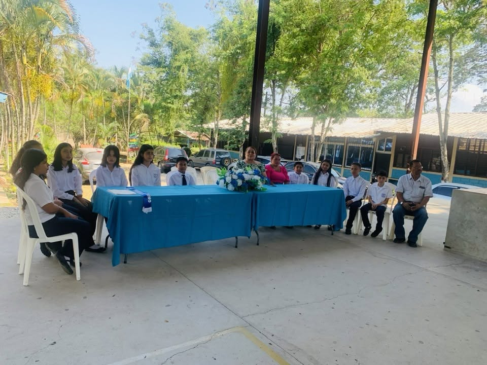
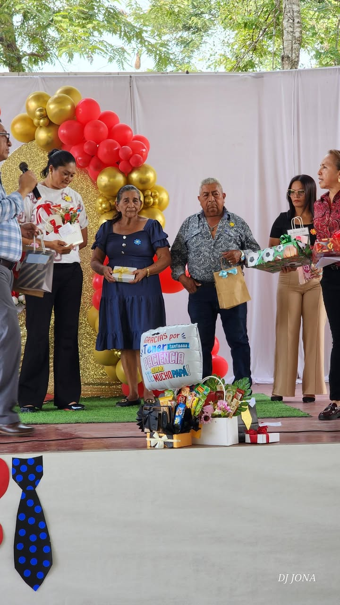

Actividades academicas
- · Feria de Inteligencia Artificial
- · Capacitaciones al alumnado
- · Graduacion 2025
Eventos y actividades
Esta pagina esta preparada para promocionar actividades reales del instituto: eventos academicos, civicos, deportivos, culturales y tecnicos.


Galeria institucional
La galeria institucional destaca actividades, talleres, aulas y eventos que reflejan la participacion estudiantil y el trabajo educativo del centro.
Agenda institucional
Registro de las actividades académicas, cívicas, culturales y técnicas realizadas y programadas en el Instituto Roberto Micheletti Bain.
Ceremonia oficial de apertura del año escolar, con bienvenida a docentes, alumnos y padres de familia.
Encuentro institucional con padres y encargados para informar sobre el avance académico y compromisos del período.
Celebración del Día del Idioma con presentaciones literarias, declamación y valoración de la lengua castellana.
Homenaje especial a las madres y padres de familia con participación de estudiantes y docentes del instituto.
Jornada reflexiva orientada a motivar al estudiantado a tomar decisiones firmes para alcanzar sus metas de vida.
Conmemoración del Día Mundial de la Tierra con actividades de conciencia ambiental y cuidado del entorno.
Actividad de sensibilización y siembra de árboles como parte del compromiso del instituto con el medio ambiente.
Jornada de reflexión y acción en torno al cuidado del planeta, con participación de toda la comunidad educativa.
Concurso estudiantil de representación y valores que elige a los embajadores del instituto para la temporada de verano.
Exposición de proyectos y demostraciones de herramientas de IA desarrollados por los alumnos de las orientaciones técnicas.
Talleres y capacitaciones formativas dirigidos al estudiantado en temas de habilidades técnicas, sociales y académicas.
Proceso democrático en el que el estudiantado elige a sus representantes para el Gobierno Estudiantil del instituto.
Ceremonia oficial de juramentación e investidura de los estudiantes electos como representantes del instituto.
Ceremonia de graduación de la promoción 2025, celebrando el esfuerzo y logro académico de los nuevos bachilleres del instituto.
Galería fotográfica
Espacio destinado para mostrar fotografías de eventos académicos, cívicos, deportivos y culturales del instituto.




